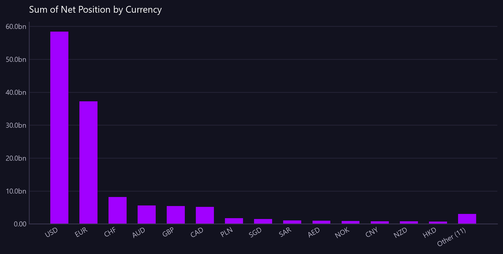

Sum of Net Position by Currency
Net position by currency across the period - which currencies we are structurally short of and long in.
Asked as Show the net position by currency across the month - credits less debits - so I can see which currencies we are structurally short of.

Only the largest 14 categories are charted; the remainder are combined into a single 'Other' bar. The full breakdown is in the table.
Commentary
The report displays the net position by currency for the month, highlighting which currencies the bank is structurally short of. The USD has the largest net position at 58,352,868,317.05, followed by the EUR at 37,202,618,870.24, indicating a significant surplus in these currencies. The smallest net positions are observed in the HUF and CZK, with values of 49,252,265.38 and 48,641,849.20, respectively. Operations should closely monitor these smaller net positions to ensure adequate liquidity coverage.
| Currency | Net Position |
|---|---|
| USD | 58,352,868,317.05 |
| EUR | 37,202,618,870.24 |
| CHF | 8,151,918,994.81 |
| AUD | 5,555,501,221.77 |
| GBP | 5,461,242,061.71 |
| CAD | 5,180,379,237.21 |
| PLN | 1,739,913,185.52 |
| SGD | 1,494,627,231.92 |
| SAR | 1,045,550,665.70 |
| AED | 929,011,268.32 |
| NOK | 842,126,736.82 |
| CNY | 821,936,328.22 |
| NZD | 791,352,133.56 |
| HKD | 703,277,132.91 |
| MXN | 693,788,957.87 |
| ILS | 573,871,487.27 |
| ZAR | 444,067,305.27 |
| RON | 423,211,268.57 |
| SEK | 329,489,211.19 |
| TRY | 222,046,864.96 |
| DKK | 154,281,887.85 |
| THB | 57,796,552.86 |
| HUF | 49,252,265.38 |
| CZK | 48,641,849.20 |
| Other (3) | 44,974,070.54 |
Limitations of this view
- 27 groups were returned. The 24 largest are shown individually and the remaining 3 are combined into "Other" - a breakdown this long is not readable as a management view. Ask for a specific group, or a top-N, to go further.
- The view is scoped to the value date range from 2026-07-20 to 2026-08-18.
- The net position is calculated using static synthetic FX rates for display currency translation.
- This analysis assumes all transactions have been received and processed for the period.
Dependencies
- The calculation depends on the derived column 'Net Position' which is not directly sourced.
Downloads
{kind=link}
The Markdown documents everything considered, so a reader can hand it to an AI and ask follow-up questions about this view.
How this was produced
{
"view": "client",
"sheet": "Client View",
"source_file": "synthetic_liquidity_month.xlsx",
"mode": "aggregate",
"filters": [],
"group_by": [
"Currency"
],
"time_bucket": null,
"measures": [
"sum of Net Position"
],
"columns": [],
"sort_by": null,
"limit": null,
"join": null,
"derived": [
"Net Position"
],
"currency_corrections": [
"27 groups were returned. The 24 largest are shown individually and the remaining 3 are combined into \"Other\" - a breakdown this long is not readable as a management view. Ask for a specific group, or a top-N, to go further."
],
"data_as_of": null,
"measure": "Net Position",
"aggregation": "sum",
"rows_in_view": 19800,
"rows_after_filters": 19800,
"rows_returned": 25,
"executed_at": "2026-08-20T11:29:34"
}